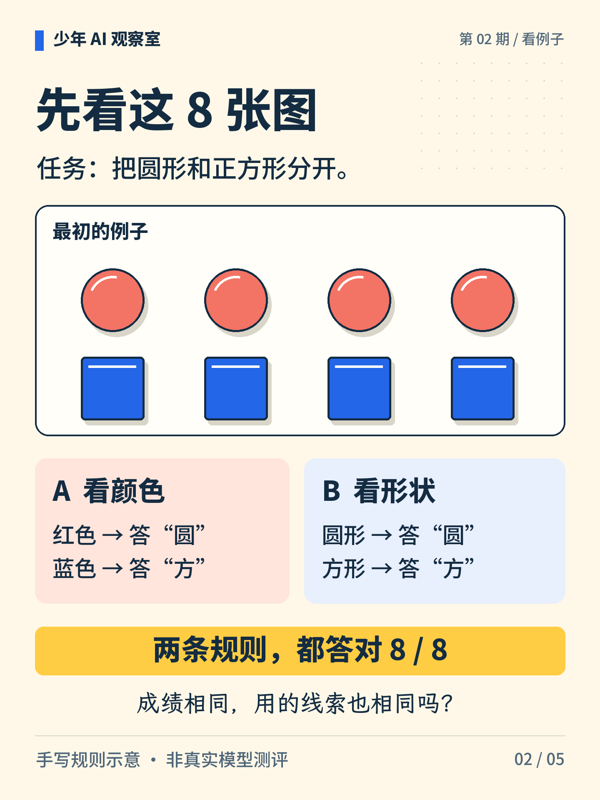
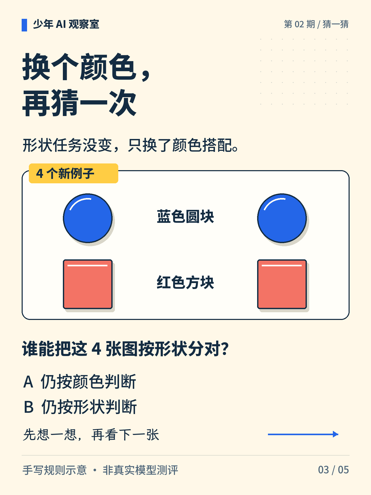
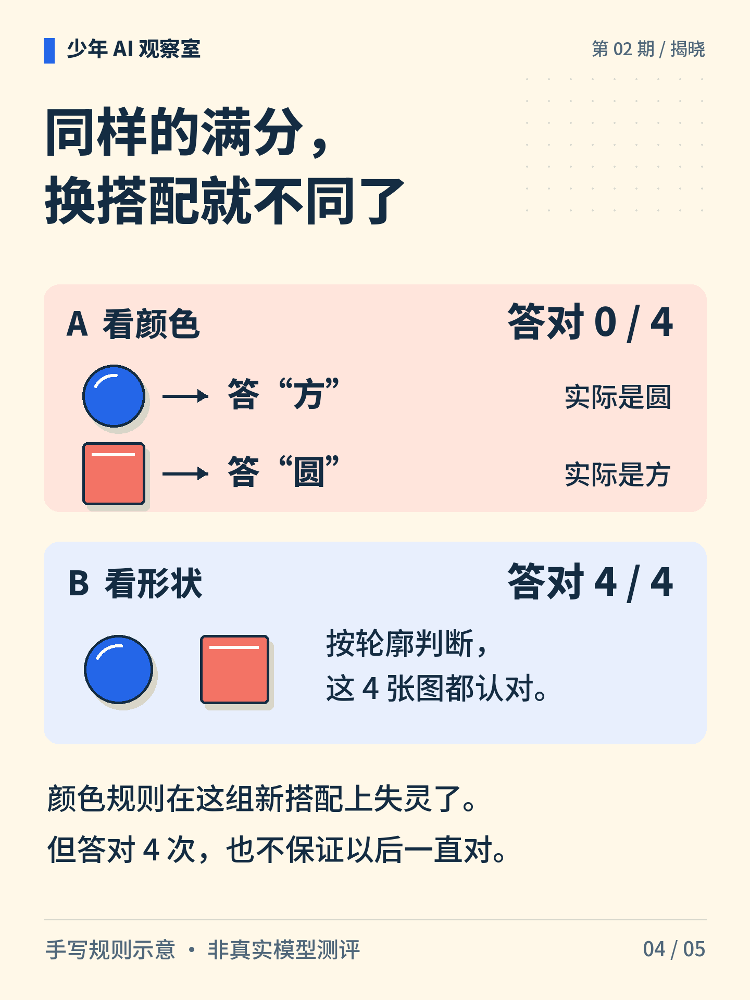

少年 AI 观察室 · 第 02 期
拿了满分，就真学会了吗？
任务是分清圆形和方形。四个红圆、四个蓝方，两条规则都能拿满分。换成蓝圆和红方，谁还能认对？先猜一猜，再看答案。
图解文字
满分便签与不同颜色、形状的积木，提出“换搭配以后还能认对吗”。

图解文字
最初有四个红圆和四个蓝方。规则 A 看颜色，规则 B 看形状，两者都答对 8/8。

图解文字
新例子是两个蓝圆和两个红方。任务仍是分圆与方，颜色和形状的搭配变了。

图解文字
规则 A 把蓝圆答成方、红方答成圆，答对 0/4；规则 B 按轮廓分类，答对 4/4。
图解文字
按形状分类时红圆与蓝圆同类；按颜色分类时蓝圆与蓝方同类。测试必须围绕指定任务。
想一想
如果补拍两张图片，你会选什么颜色和形状？
展开参考思路
优先补一张蓝色圆形和一张红色方形，打破“红色总是圆、蓝色总是方”的搭配。按颜色的规则会把两张都分错，按形状的规则会分对。它们能暴露这条捷径，但不能检验所有可能的错误。
训练例子上的满分，不能代替新搭配上的测试。
A、B 是人为写出的规则，不是真实模型。8/8、0/4、4/4 只描述图中这几张样本；当前任务是按形状分类。
正文首图为 AI 辅助生成的概念插画；第 2—5 张图按核对过的文字与规则绘制。
延伸阅读资料
文中算例与图解用于说明原理，不是实际模型的测评结果。研究结论对应以下资料。〔1〕 Stanford CS231n，Image Classification（课程笔记；访问日期：2026-10-05）。
https://cs231n.github.io/classification/
〔2〕 Google Developers，Generalization（官方课程；访问日期：2026-10-05）。
https://developers.google.com/machine-learning/crash-course/overfitting/generalization
〔3〕 Geirhos 等，2020，Shortcut Learning in Deep Neural Networks，Nature Machine Intelligence。arXiv:2004.07780。
https://arxiv.org/abs/2004.07780
书目信息沿用原稿，本轮未重新核验外部网页的可访问性。